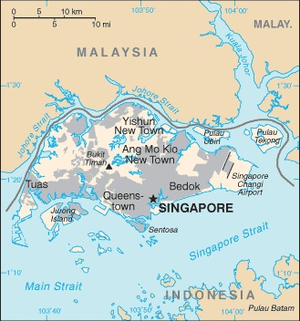

Genel Bilgiler
Singapur, Güneydoğu Asya’da yer alan şehir-devlet şeklinde yönetilen bir ülkedir. Başkenti Singapur Şehri’dir. Yaklaşık 5,9 milyon nüfusa sahiptir. Resmî dilleri İngilizce, Malayca, Mandarin ve Tamil’dir. Para birimi Singapur Doları (SGD)’dır. Singapur, güçlü bir finans, ticaret ve liman merkezi olarak küresel öneme sahiptir.
Singapur, Malay Yarımadası’nın güney ucunda, ekvatora yakın bir ada ülkesidir. Yüzölçümü yaklaşık 728 km²’dir. Ana ada ve 60’tan fazla küçük adadan oluşur. Ülke tropikal iklim özelliklerine sahiptir ve yoğun bir şehirleşme ile sınırlı doğal alanlar bulunur.
Başkent: Singapur
Kıta: Asya
Yüzölçümü: 728 km²
Nüfus (2025): 5.900.000

Bayrak Anlamı: Singapur bayrağı yatay iki eşit şeritten oluşur: üstte kırmızı, altta beyaz; sol üst köşede beyaz bir ay ve beş yıldız vardır. Kırmızı eşitliği ve ortakluğu, beyaz saflığı simgeler. Ay birliğe ve yeni başlangıca, yıldızlar demokrasi, barış, ilerleme, adalet ve eşitliği temsil eder. Bayrak 1959 yılında resmî kabul edilmiştir.
Singapur Haritası
Ekonomi
Singapur ekonomisi yüksek gelirli ve gelişmiş bir yapıya sahiptir. Hizmet sektörü, özellikle finans, lojistik, turizm ve bilgi teknolojileri ekonominin büyük kısmını oluşturur. Sanayi sektörü elektronik, biyomedikal ürünler ve gemi inşasında yoğunlaşmıştır. Singapur, küresel ticaret ve yatırım için stratejik bir merkezdir ve yüksek yaşam standartları ile tanınır.
| Yıl | İhracat (Milyar $) | İthalat (Milyar $) |
|---|---|---|
| 2019 | 450 | 420 |
| 2020 | 460 | 430 |
| 2021 | 490 | 460 |
| 2022 | 500 | 470 |
| 2023 | 505 | 475 |